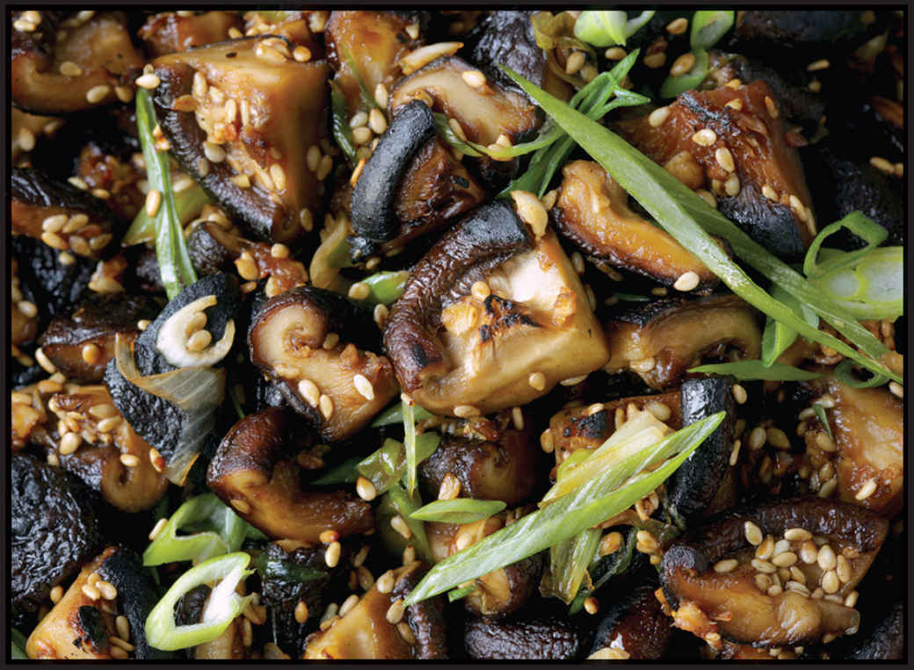

SOY-GLAZED MUSHROOMS
|
Yield Serves 4 Active Time 10 minutes Total Time 10 minutes |
This recipe also works very well with maitake mushrooms. Cut the tough base off the maitakes, then separate the frond-like caps into bite-sized clusters. |
INGREDIENTS
2 tablespoons (30 ml) peanut, rice bran, or other neutral oil
12 ounces (340 g) shiitake, button, or cremini mushrooms, trimmed (remove and discard stems from shiitake entirely), caps cut into quarters (see Note)
2 teaspoons (5 g) minced garlic (about 2 medium cloves)
2 teaspoons (5 g) minced fresh ginger (about ½-inch segment)
1 tablespoon (15 ml) light soy sauce or shoyu
2 teaspoons (8 g) sugar
1 teaspoon (5 ml) roasted sesame oil
2 scallions, thinly sliced on a bias
2 teaspoons toasted sesame seeds
Kosher salt and freshly ground black pepper
These simple stir-fried mushrooms are meaty and tender with crispy browned bits and an intensely savory flavor. They work well on their own as a side dish, but they’re almost better as leftovers added straight to a salad, tossed into another stir-fry for the last minute, dropped into a bowl of instant ramen, or eaten straight from the container at midnight by the harsh light of the refrigerator door.
The recipe will work well with most mushrooms, but I find shiitake or maitake will give you the meatiest bite and the most crispy bits.
DIRECTIONS
Heat a wok over high heat until lightly smoking. Add the oil and swirl to coat. Add the mushrooms and stir-fry until the mushrooms are deeply browned and crisp in spots, but still juicy and tender, about 5 minutes, reducing the heat if the mushrooms threaten to burn. Add the garlic and ginger and stir-fry until fragrant, about 15 seconds. Splash the soy sauce around the edges of the wok and toss to combine. Add the sugar, sesame oil, scallions, and sesame seeds and toss until the mushrooms are thoroughly coated in the mixture. Season to taste with salt and pepper. Transfer to a serving platter and serve immediately or let them cool, transfer to a sealed container, and store them in the refrigerator for up to a week. Add them to salads, soups, or as a last-minute addition to other stir-fries.
